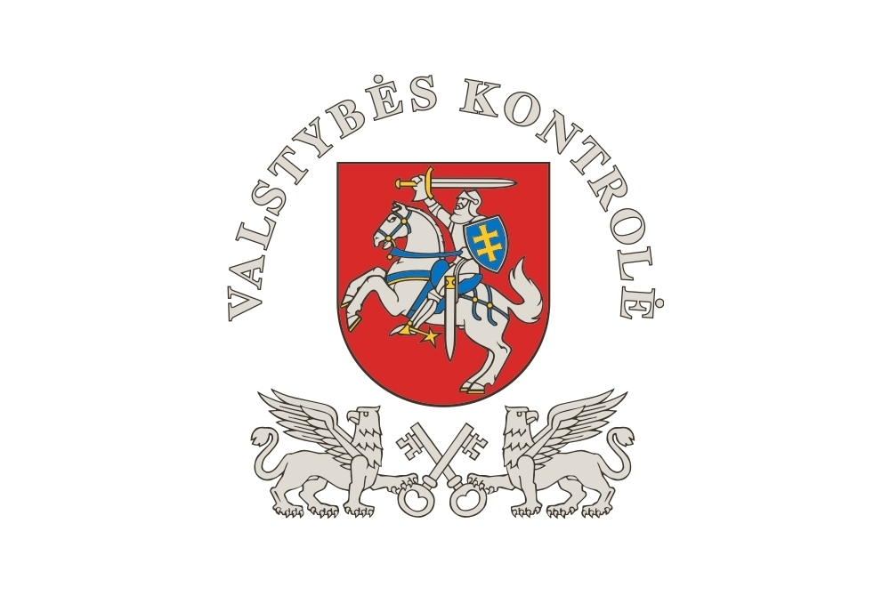

Welcome to valstybės
Keičiasi valstybės tarnautojų tarnybinės veiklos vertinimas - DELFI
2020.10.27 11:50Spalio 27 d., antradienis | Vilnius 14 Kaunas 13 Klaipėda 13 Šiauliai 12 Panevėžys 13 Alytus 13 Nida 12 Raseiniai 12 Utena 13 Mažeikiai 13 Biržai 13 Kėdainiai 12 Kiti miestai Paieška | Pranešti naujieną | LT RU EN | Reklama Kontaktai | Statistika | + Apie Delfi plius Prisijungti Naujausios Skaitomiausios Lietuvoje Sportas Orai Kriminalai Užsienyje Veidai Horoskopai Gyvenimas Mokslas Verslas Daugiau Sveikata Kultūra Auto M360 Politiko akimis Jaunimas Pilietis Nuomonių ringas Multimedija Teisė Medijos Karas Propaganda PT Melo detektorius Demaskuok Ačiū už pamokas Temos | Delfi Video
Naujienos
Naujausios Skaitomiausios Lietuvoje Sportas Kriminalai Užsienyje Veidai GyvenimasVerslas Mokslas Kultūra Sveikata Auto Pilietis Miestai M360 Politiko akimis
Delfi Video
Tiesioginės transliacijos Delfi Diena Delfi Dėmesio centre LaidosNaudinga
Orai Horoskopai Receptai TV Programa Valiutų kursaiDelfi projektai
Multimedija Idėja Lietuvai Kablys Smalsūs EP Atsakingas požiūris Atgal į gyvenimąDelfi kanalai
Agro Būstas Moterys Šeima Kelionės Grynas Stilius Maistas Letena Karjera Bored Panda Sek DelfiMobilusis Delfi
Vilnius Kaunas Klaipėda Šiauliai Daugiau Panevėžys Alytus Marijampolė Utena Telšiai Tauragė Palanga Rinkimai 2020 Agro Būstas Moterys Šeima Kelionės Grynas Stilius Maistas Letena Bloomberg Karjera Login 2020 DELFI Žinios Dienos naujienos Lietuvoje
Keičiasi valstybės tarnautojų tarnybinės veiklos vertinimas
(25) ELTA 2020 m. spalio 3 d. 13:57Nuorodos kopijavimas
Keičiasi valstybės tarnautojų tarnybinės veiklos vertinimas
Nuoroda nukopijuota
aA Nuo spalio 1 d. pasikeitė valstybės tarnautojų tarnybinės veiklos vertinimas. Didžiausios vertinimo naujovės laukia įstaigų vadovų. Jų veiklą vertins ne tik jų tiesioginiai vadovai, bet ir kolegos bei jiems pavaldūs asmenys, sakoma Valstybės tarnybos departamento (VTD) pranešime. © DELFI / Valdas KopūstasKitų metų sausį vyksiantis kasmetinis valstybės tarnautojų tarnybinės veiklos vertinimas jau vyks pagal naują tvarką. Papildomai bus vertinama ir valstybės tarnautojų kvalifikacija pagal pareigybės aprašyme nustatytas kompetencijas. Šios vertinimo dalies tikslas – kvalifikacijos tobulinimo poreikio nustatymas, t. y. kompetencijų vertinimas bus atliekamas, siekiant išsiaiškinti, kokių kompetencijų valstybės tarnautojui trūksta ir kaip jis galėtų užpildyti esamas spragas: mokydamasis savarankiškai, veikloje, konsultuodamasis su kolegomis ar neformaliojo švietimo būdu.
Didžiausia naujovė laukia įstaigų vadovų (priimamų į pareigas konkurso būdu). Jų kompetencijų vertinimas bus atliekamas 360 laipsnių metodu. Tai reiškia, kad įstaigų vadovų kompetencijas vertins ne tik jie patys bei jų tiesioginiai vadovai, bet ir jiems pavaldūs valstybės tarnautojai ar darbuotojai , dirbantys pagal darbo sutartį, bei kolegos – kitų susijusių įstaigų vadovai, valstybės tarnautojai, darbuotojai.
Numatyta, kad savo vadovo kompetencijų vertinimą atliks mažiausiai 10–20 pavaldžių asmenų, priklausomai nuo įstaigos dydžio, bei 5–10 kolegos. Pavaldžius asmenis pagal tam tikrus kriterijus automatizuotai atrinks informacinė sistema, o kolegų sąrašą sudarys pats įstaigos vadovas, suderinęs su savo tiesioginiu vadovu.
Vertinimas vyks anonimiškai per Valstybės tarnybos valdymo informacinę sistemą. Vertinimo rezultatus matys pats įstaigos vadovas ir jo tiesioginis vadovas (pavyzdžiui, ministras).
Pasak VTD prie Vidaus reikalų ministerijos direktoriaus Gedimino Miškinio, ši naujovė padės vadovams plačiau pažvelgti į savo kompetencijas, pamatyti save iš įvairių perspektyvų: pavaldinių, kolegų. Tai – galimybė reflektuoti savo vadovavimo įgūdžius ir prireikus juos tobulinti.
„Vadovas, kaip ir bet koks profesionalas, privalo nuolat tobulėti, mokytis, keistis, priklausomai nuo aplinkybių. Vienokių vadovavimo kompetencijų reikėjo prieš 20 metų, kitokių – dabar. Vienoje įstaigoje reikalingi vienoki gebėjimai, kitoje – gyvybiškai svarbūs kitokie. Keičiasi visuomenė, keičiasi organizacijos, darbuotojų lūkesčiai. Turi keistis ir vadovai“, – sako G. Miškinis.
360 laipsnių vertinimo metodas plačiai taikomas pasaulyje tiek viešojo sektoriaus, tiek verslo organizacijose. Jis leidžia palyginti, kaip darbuotojas pats vertina savo profesines, lyderystės kompetencijas, o kaip jį mato kiti kartu dirbantys žmonės. Dažniausiai šis metodas taikomas vadovų kompetencijų vertinimui.
33 PasidalinoNuorodos kopijavimas
Keičiasi valstybės tarnautojų tarnybinės veiklos vertinimas
Nuoroda nukopijuota
Be raštiško ELTA sutikimo šios naujienos tekstą kopijuoti draudžiama. | Populiariausi straipsniai ir video Įvertink šį straipsnį Norėdami tobulėti, suteikiame jums galimybę įvertinti skaitomą DELFI turinį. ( 10 žmonių įvertino) 2.6000Top naujienos
SveikataMokslininkai: pradeda dominuoti nevaldomi COVID-19 židiniai, gali laukti Čekijos likimas griežto karantino reikia jau lapkritį (256)
Šiuo metu Lietuvoje galimi net keturi koronaviruso epidemijos vystymosi scenarijai. Vadovaujantis...
LietuvojeVeryga apie naujus draudimus: situacija dabar visiškai kitokia nei buvo pavasarį sveikatos priežiūros paslaugų gali mažėti savaime (434) 271
Nacionalinis visuomenės sveikatos centras ( NVSC ) pirmadienį pranešė apie dar vieną naujų...
LietuvojeLietuvoje patvirtinta 413 naujų koronaviruso atvejų, mirė dar 5 žmonės (30)
Nacionalinis visuomenės sveikatos centras (NVSC) praneša, kad per vakar dieną Lietuvoje fiksuota...
LietuvojeLietuva šiandien išsiųs notą Minskui (57)
Lietuva antradienį įteiks notą Minskui dėl ketinimų lapkričio pradžioje pradėti elektros...
NuomonėsMindaugas Jurkynas. Belaukiant naujos Vyriausybės (4)
Ruduo. Seimo nariai suskaičiuoti, ryškėja naujos vyriausybės spalvos ir kontūrai. Dabar apie...
LietuvojePlintant koronavirusui – svarbi informacija tėvams: kas ir kada gali gauti „biuletenį“ už vaikų priežiūrą? (40)
Koronavirusui plintant visuomenėje, dalyje švietimo įstaigų pereinama prie nuotolinio ar mišraus...
The Economist | D+ nariamsNauja knyga sukėlė tikrą audrą: moterys vyrus turėtų varyti lauk
„Kad išlaisvintume moterį, privalome ne drausti jai santykius su vyrais, o jos tais santykiais...
UžsienyjeMinske sulaikyti medikai: skubią pagalbą pacientams teikiantis skyrius nebegali dirbti Cichanouskaja: režimas išsigando (292)
Minske sulaikyta 11 Baltarusijos respublikinio mokslinio-praktinio centro „Kardiologija“...
VerslasPrimena suskubti dėl paramos: Lietuvos daugiabučiuose masiškai šalinami dujų balionai (14)
Bendrijos, administratoriai ir savivaldybių įmonės aktyviai talkino gyventojams, išreiškusiems...
VerslasŠešiasdešimtmečiai Lietuvoje: darbingi, bet darbdaviams nereikalingi (1)
Dabartinė šešiasdešimtmečių karta pateko į darbingo amžiaus gyventojų gretas, kai ankstesnės...
| Maža didelių žinių kaina Sekite DELFI REKLAMA KONTAKTAI PRIVATUMAS KARJERA en.delfi.lt ru.delfi.lt pl.delfi.lt delfi.ee rus.delfi.ee delfi.lv ru.delfi.lv UAB DELFI Gynėjų g. 16, 01109 Vilnius +37052045400 info@delfi.lt © 1999-2020 DELFI. Visos teisės saugomos .